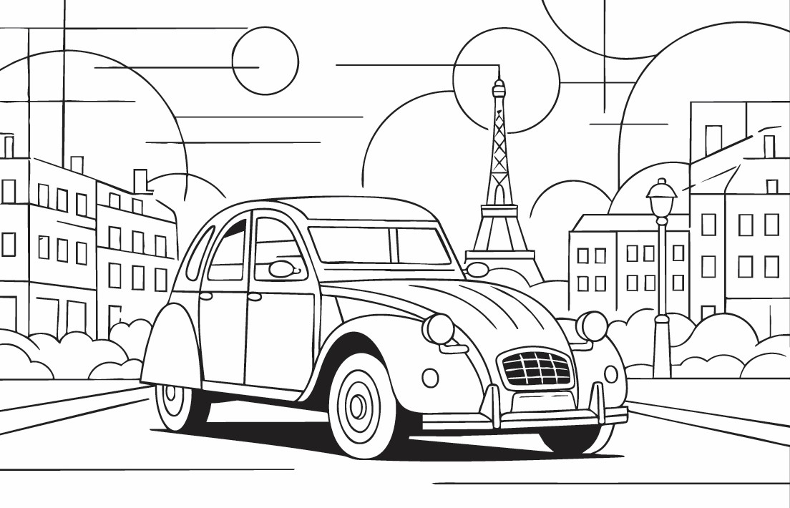
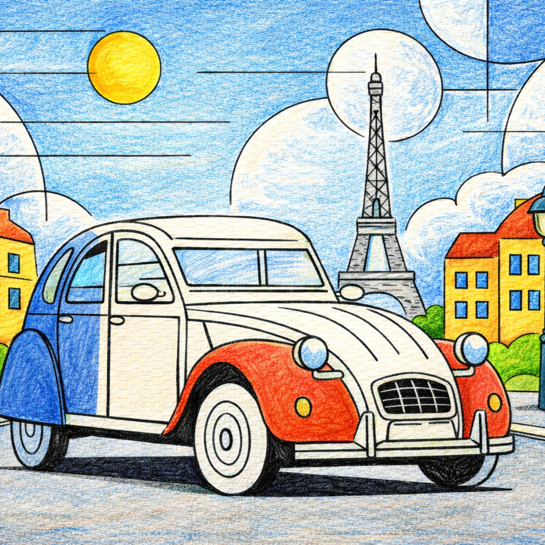

Eiffel Tower
One of the places or cultural icons featured in our Paris colouring book, Eiffel Tower is reimagined with clean geometric shapes and room for creative colour.
Discover the architecture, neighbourhoods and everyday icons of Paris through clean Bauhaus-inspired line illustrations, ready for your colours.
From Eiffel Tower to Paris bicycle, this edition explores the sights, local culture and visual character of Paris through a gallery of line illustrations.
Designed for adults who love travel, architecture and creative downtime, the pages use bold composition and open spaces for mindful colouring.
VIEW THE PARIS BOOK

PREVIEW: PARIS · LINE ART & COLOUR
Discover the places and details that inspired the illustrations in this edition.
One of the places or cultural icons featured in our Paris colouring book, Eiffel Tower is reimagined with clean geometric shapes and room for creative colour.
One of the places or cultural icons featured in our Paris colouring book, Arc de Triomphe is reimagined with clean geometric shapes and room for creative colour.
One of the places or cultural icons featured in our Paris colouring book, Louvre Pyramid is reimagined with clean geometric shapes and room for creative colour.
Part of the rhythm of getting around Paris, Paris Metro entrance becomes a graphic study in lines, forms and everyday movement.
Croissant and coffee adds a taste of local everyday culture to the Paris collection, with shapes and details ready for your own palette.
One of the places or cultural icons featured in our Paris colouring book, Notre Dame Cathedral is reimagined with clean geometric shapes and room for creative colour.
One of the places or cultural icons featured in our Paris colouring book, Paris carousel is reimagined with clean geometric shapes and room for creative colour.
One of the places or cultural icons featured in our Paris colouring book, Moulin Rouge windmill is reimagined with clean geometric shapes and room for creative colour.
One of the places or cultural icons featured in our Paris colouring book, Paris patisserie shopfront is reimagined with clean geometric shapes and room for creative colour.
A cultural highlight in Paris, Centre Pompidou brings art, architecture and creative life into this city-inspired colouring collection.
One of the places or cultural icons featured in our Paris colouring book, Citroën 2CV car is reimagined with clean geometric shapes and room for creative colour.
Paris street artist painting captures a piece of Paris street life, from its built environment to the small details that make a neighbourhood memorable.
One of the places or cultural icons featured in our Paris colouring book, Sacré-Cœur Basilica is reimagined with clean geometric shapes and room for creative colour.
Water, movement and the city meet at Canal Saint-Martin footbridge, offering a distinctive scene to explore through geometric lines and colour.
Part of the rhythm of getting around Paris, Paris bicycle becomes a graphic study in lines, forms and everyday movement.
Explore the Paris edition and the wider Page Craft Studio city colouring book collection.